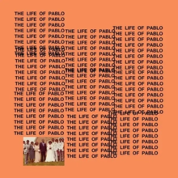
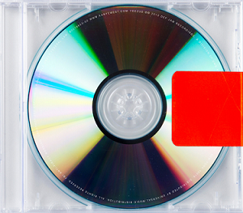

Top 5 Músicas do Kanye West
As melhores faixas escolhidas com base no que mais toca o coração.
1. Violent Crimes
Álbum: Ye (2018)
Uma reflexão profunda sobre paternidade e proteção, com uma batida minimalista que deixa a letra brilhar.

2. Devil in a New Dress
Álbum: My Beautiful Dark Twisted Fantasy (2010)
Um sample clássico com um flow impecável e um solo de guitarra que fecha com chave de ouro.

3. God Is
Álbum: Jesus Is King (2019)
Uma entrega espiritual com vocais emocionantes que mostram o lado mais devoto do Kanye.

4. Father Stretch My Hands Pt. 1
Álbum: The Life of Pablo (2016)
Uma intro épica com um sample gospel que vira um hino moderno e cheio de energia.

5. Bound 2
Álbum: Yeezus (2013)
Um mix de nostalgia com um sample soul que fecha o álbum com uma vibe única e emocional.